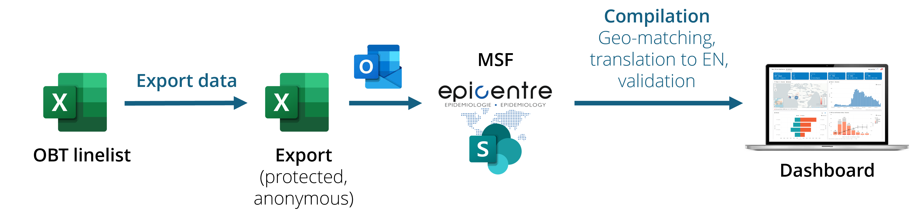

Send data to the dashboard
If you are using a linelist for which a dashboard was developed, you can send password-protected anonymous data to Epicentre. The scripts run automatically every hour, so you can choose the frequency at which you send the data depending on your needs1.

Steps
Prepare data
Clean your data as much as you can. Pay special attention to dates (date format, date in the future, impossible dates…) and geographic data (see Note 1)
Make sure that the general information metadata is properly filled (country, site name, section…) as this data is used in the dashboard.
Clear filters: you want to send the whole dataset, not only the current week. (see Important 1). If you know that automatic calculations get stuck sometimes, hit F9/“Recalculate now” Excel button to force formula updates.
Export and send
Export data using the “Export data” button of the OutbreakTools menu, and chose the “Anonymous export to MSF” option (or a similar name). You will be prompted for a place to save the genarated export.
Send the data to epi-data [at] epicentre.msf.org without renaming the file.
Rince and repeat for all the linelists you have.
The file generated is a password protected excel file, whose password is provided at export. It has the Info sheet and patient data, as well as some automatically generated metadata (language, linelist version etc.).
The name of the export file is generated automatically based on the matadata you filled so make sure these data are filled correctly once and for all. Consequently, if their metadata are filled correctly, you can send several exports in the same mail (from different sites, or even different diseases), the scripts will parse the name to sort the files on our end
Only the last occurrence of data you sent is loaded on the dashboard.
Consequently, it is perfectly fine to clean and amend past data even if you sent it previously (past exports will be ignored).
If you need to archive older data to work on a smaller and lighter linelist, contact the EpiDS team to make the setup so that both new and archive data go to the dashboard.
The dashboard displays a map, where you can visualise data at several administrative levels (1 to 4), but it depends on the resolution of the data you and other send). For patients to appear on the map at a given resolution level, their geolocations needs to match the geobase for this level because the geobase loaded with the linelist corresponds to shapes used to create maps.
If a place of origin cannot be matched for a given level (e.g. health area), the patient will not be included on the map at the “health area” level resolution If the above level (here the health zone) is matched, the patient will be accounted in the health zone resolution map.
The patient will be counted in other tables/graphs as long as the relevant information is filled, regardless of the geomatching.
Footnotes
e.g. twice a day for a cholera outbreak at its peak, or once every week etc.↩︎